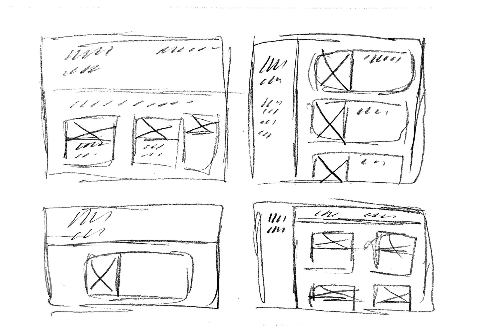
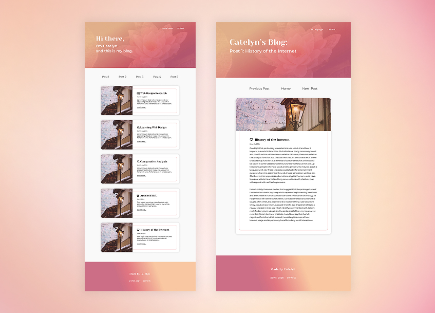
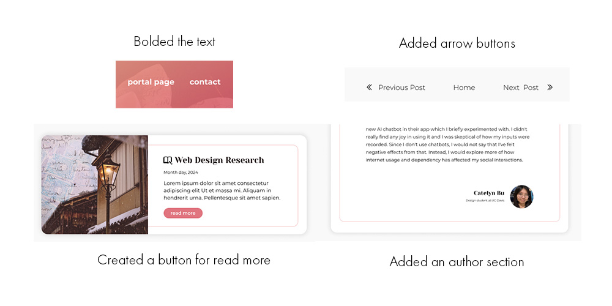
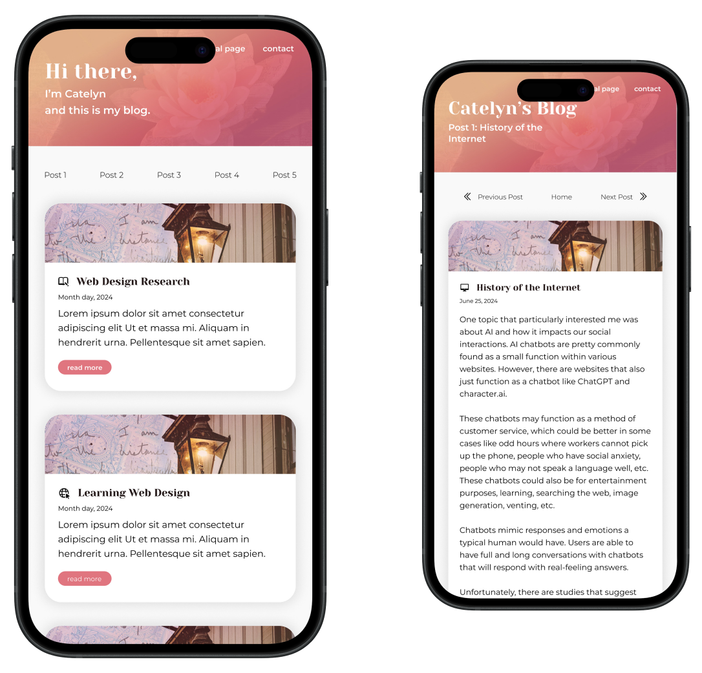
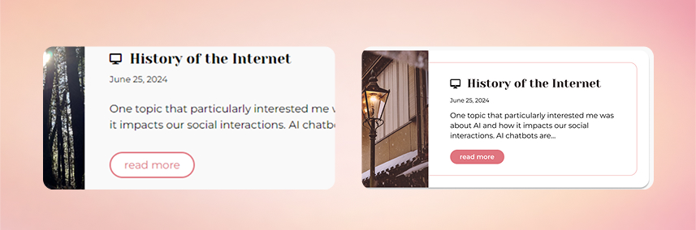
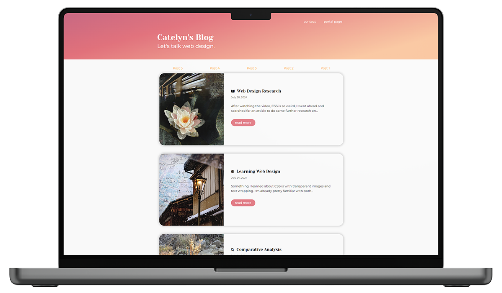
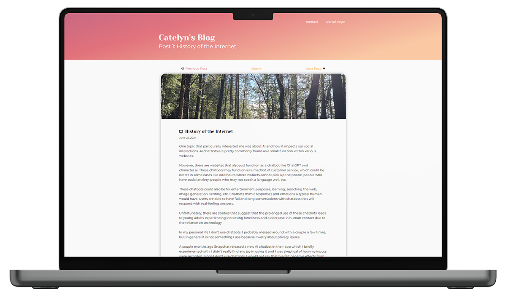
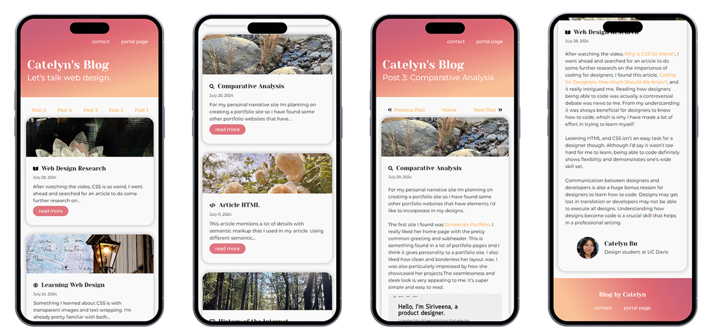
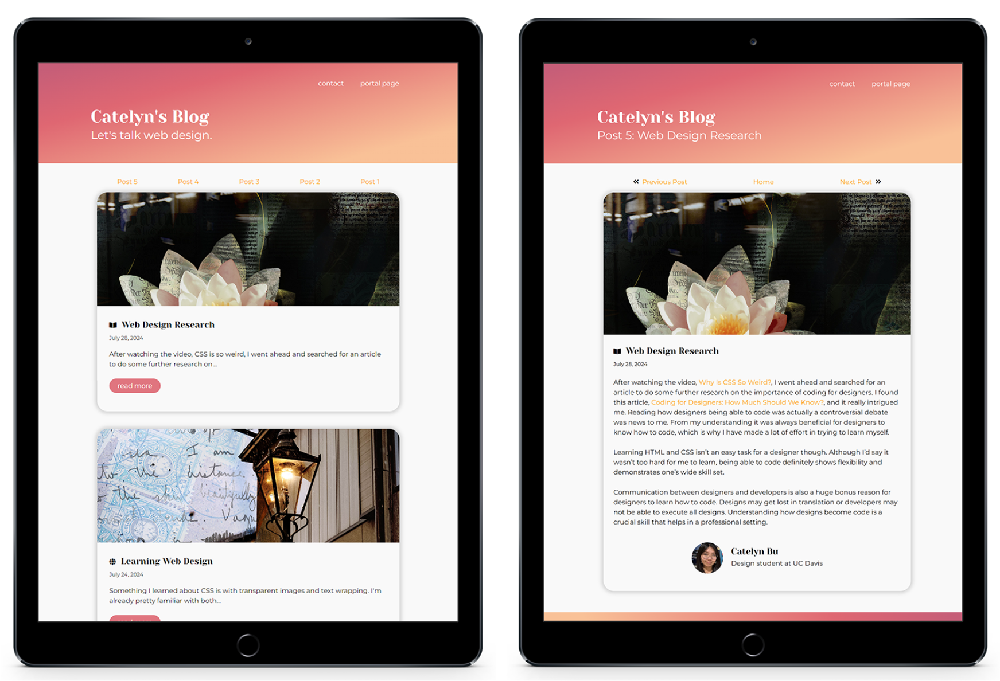

Responsive
Blog Site

Overview
I created a blog website to post my thoughts on web development. It was a way to practice using HTML and CSS along with experimenting with UI design.
I used Figma to develop my designs and approached the coding aspect from a mobile first perspective. The designs I created were readable, tasteful, and cohesive. This blog website is also fully responsive to mobile, tablet, and desktop viewing.
Ideation:
To get started with the design process I did some brainstorming sketches. I did this to experiment with different layout options, orientations, and text placement.
During this phase I heavily considered how I wanted content to be displayed, with also keeping in mind how I would make my designs responsive.
In the end, I opted for a singular column layout to mimic a social media-like feed appearance, since this is a blog. This choice is more casual and easily adaptable to both mobile and desktop designs.

Mid-fi Prototype:
After making some further refinements to my sketches, I went ahead and developed my mid-fi prototype in Figma.
During this stage I considered the design style I wanted to go for. This includes colors, typography, box styles, button styles, etc.
Ultimately, I wanted a modern and minimalistic, yet bold design that showcased my personal artistic style.
I decided on a bright peachy pink as the primary color throughout the site. And I used a elegant serif font for headers and a sans-serif font for body text. I used a drop shadow to add depth to the space and rounded edges for a friendly feel.

Critiques & Revisions:
After creating the mid-fi prototype, others critiqued my design and I made the appropriate changes.
One person suggested I create a button for the "read more" link to bring more attention to that feature.
Another person was concerned with the readability of the white text on the gradient backgrounds in the header and footer. I made changes to fit those needs and I also made some additional changes to add more interest in the design.

Prototyping: High-fi:
Once the desktop designs were finalized and I finished making the appropriate adjustments, I went ahead and developed the mobile design.
This mobile design aimed to be readable at a smaller scale, but still carried the same components as the desktop version.
I then used these mobile and desktop designs to guide the development process. I jumped right into Visual Studio Code to get started with coding.

Development Process:
I started the coding with mobile first to ease the complexity of the CSS.
I ran into some issues with translating designs into the actual product. For example, having that simple pink border around each post on desktop posed to be a more difficult task than expected. Ultimately it had to be removed for optimal responsiveness.
A factor that wasn’t properly considered during the design process was the different styles of link states. As I was developing I needed to figure out the style and colors of links during hover, active, and visited states.

Final Product
The final product features a home page that briefly introduces five different articles. The website’s viewing is optimized for several different screen sizes to provide users with the same experience navigating through the product regardless of what device they may be using.




Takeaways
This project was entirely made by myself through the design and the development. Working solo helped me improve my overall skills as a web designer from the visual areas to the technical areas.
Development Skills
I strengthened my core web development skills by only using HTML and CSS. Before jumping into more complex practices, it’s best to nail down the basics. This project gave me the opportunity to practice the skills I already had in addition to challenging myself to do something unfamiliar to me.
Responsive Design Skills
For this project I specifically aimed for a fully responsive experience. I used media queries, flexbox, and responsive units of measurement to optimize viewing my website at different screen sizes. This helped reinforce my understanding of responsive design and how I can apply it to my projects.
User Interface Design Skills
Since this project was 100% original without the help of external people, I made the visual interface to fit user-centered standards and to optimize viewing for blog and article based websites. I used Figma to create my designs and used typography, imagery, and colors to convey my thoughts on web design.